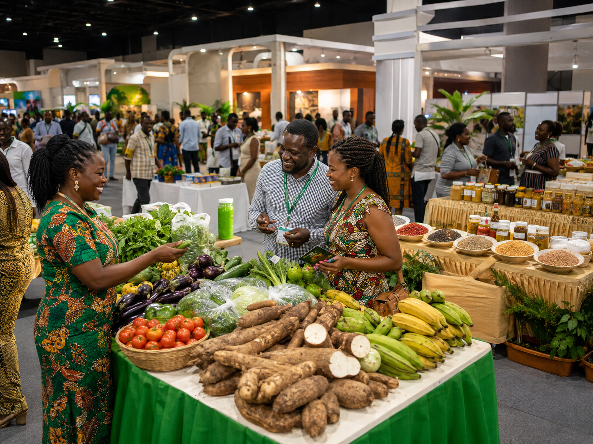

<!-- =================================================
     ABOUT THE FAIR
================================================== -->

<section
    class="section about-section"
    id="about"
>

    <div class="container about-grid">

        <!-- ABOUT IMAGE -->

        <div class="about-image-wrap">

            

            <div class="about-image-badge">

                <strong>
                    National Agribusiness Platform
                </strong>

                <span>
                    Connecting Ghana's agricultural value chain
                </span>

            </div>

        </div>


        <!-- ABOUT CONTENT -->

        <div class="about-content">

            <p class="section-kicker">
                About the Fair
            </p>

            <h2>
                Where agriculture meets
                <span>markets and opportunity.</span>
            </h2>

            <p>
                The Ghana National Food and Agribusiness Fair
                2026 brings together farmers, food processors,
                agribusinesses, buyers, investors, researchers,
                students and development partners in one
                dynamic national platform.
            </p>

            <p>
                The fair showcases the diversity of Ghana's
                agricultural value chain — from fresh fruits,
                vegetables, grains, legumes, roots and tubers
                to packaged foods, processing solutions,
                agricultural technologies and market-ready
                agribusiness products.
            </p>

            <p>
                Beyond exhibitions, GNAF 2026 creates
                opportunities for business connections,
                knowledge sharing, market access and
                partnerships that can strengthen food
                production and agribusiness development
                in Ghana and across Africa.
            </p>


            <div class="about-points">

                <div class="about-point">

                    <strong>
                        Connect
                    </strong>

                    <span>
                        Meet farmers, processors, buyers,
                        investors and development partners.
                    </span>

                </div>


                <div class="about-point">

                    <strong>
                        Discover
                    </strong>

                    <span>
                        Explore fresh produce, processed
                        foods, innovations and agribusiness
                        opportunities.
                    </span>

                </div>


                <div class="about-point">

                    <strong>
                        Grow
                    </strong>

                    <span>
                        Build partnerships and market
                        relationships that support sustainable
                        agribusiness growth.
                    </span>

                </div>

            </div>

        </div>

    </div>

</section>
